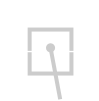
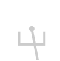
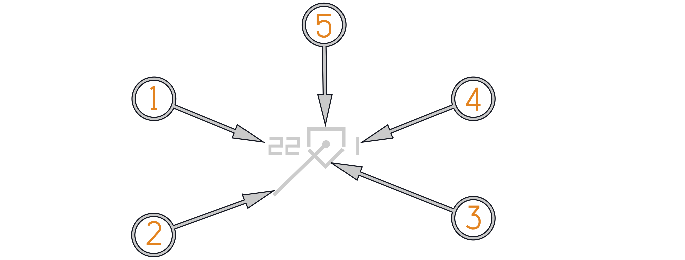
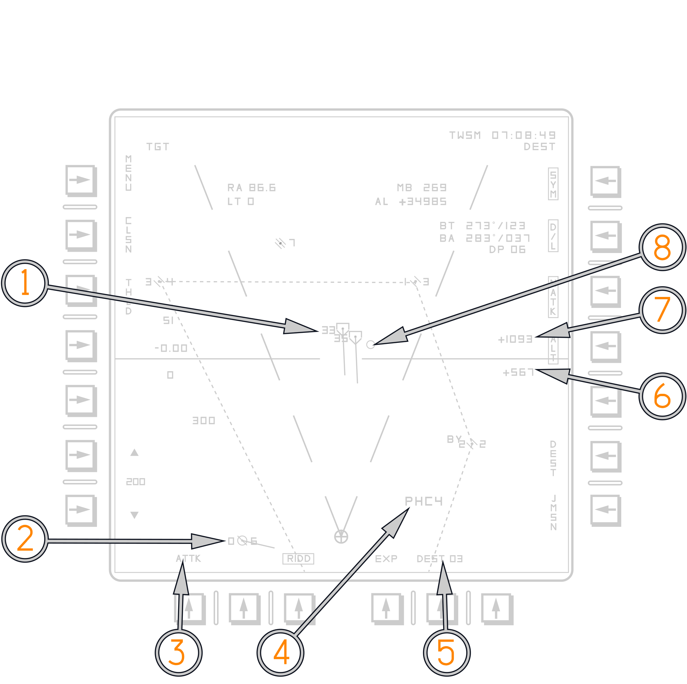
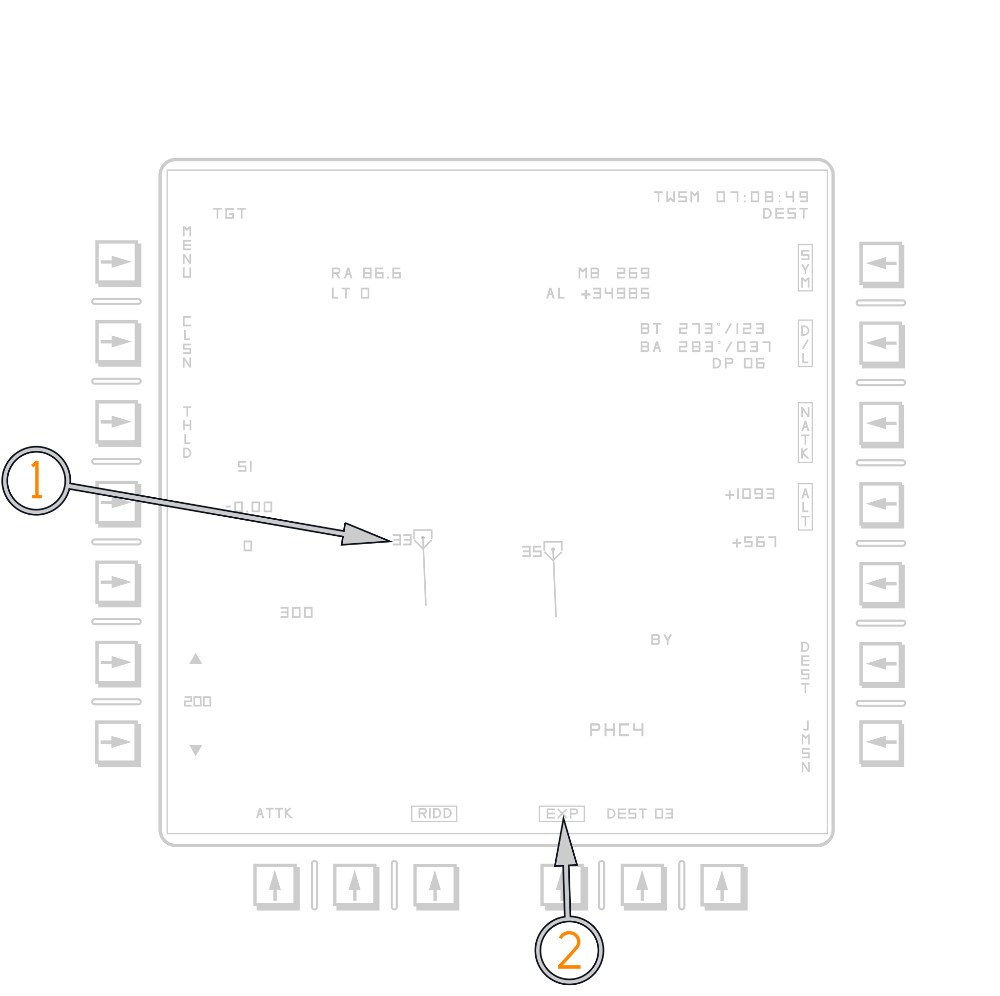

Programmable Tactical Information Display
Buffer Readouts
The PTID buffer readouts provide information for any hooked pseudo-file. With A/A TWS or STT Tracks the Buffer reads out Range and Target Aspect (LT/RT) on the left and Magnetic Bearing and Altitude on the right. With waypoint pseudo-files the buffer only reads out bearing and range to the waypoint. The CAP can be used to access more readouts depending on the RIO selection. JDAM Launch Points and JDAM Targets read out Range and Time to Go when hooked.
HAFU
HAFU Symbology (Hostile, Ambiguous, Friendly, or Unknown). F-14B(U) uses the same HAFU symbology as other contemporary fighters.
Top Half: The top half of the symbol indicates identification from your onboard sensors
Bottom Half: The bottom half of the symbol indicates the identification by offboard sensors (donors)
Vector: A line leading from the HAFU indicates two different things depending on the selection of ground stab or aircraft/attack stab
Shape: The top and bottom elements of the HAFU can have three shapes:
- Hemisphere: Friendly
- Bracket: Unknown/Bogey
- Caret: Hostile/Bandit
| Meaning | Combined | Datalink | Radar |
|---|---|---|---|
| Bandit/Hostile (ROE) |  |  | |
| Bogey/Unknown |  |  |  |
| Friendly |  |  |
Target Aspect
In the Tomcat TA is displayed as a readout on the top left of the PTID. Either as LT or RT for left or right of nose. Alternatively target aspect is displayed in GND Stab mode. In ATTK or A/C STAB the PTID presents a vector that accounts not only for bandit heading and speed but also for own heading and speed.
Track Files in Aircraft or Attack Stabilized mode

(
(
(
(
(
Track Files in Ground Stabilized mode

(
(
(
(
(
PTID Attack Stab

(
(
(
(
(
(
(
(
PTID Ground Stab

(
(
(
Expand Mode

(
(
PTID Bullseye Readouts
For a detailed discussion on PTID Bullseye refer to the Bullseye section in the PTID chapter.
AWG-9 Radar
For a detailed discussion on the AWG-9 Radar refer to the AWG-9 section in the F-14A/B manual.